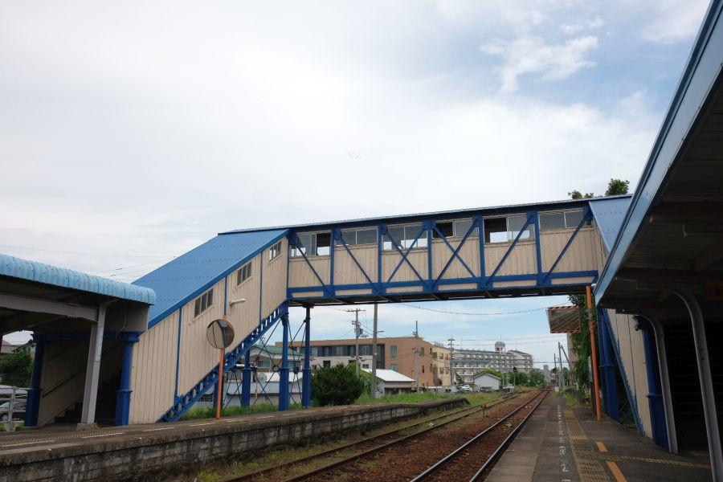

市街地に湧き出る、戦争に翻弄された清水 < 蔵清水 / 徳島市 >

蔵清水(くらしみず)
と読みます。通常湧水と言えば山奥など自然がある場所を想像するところですが、ここは市街地でありJRの駅前。滾々と湧き出る湧水を求めて、清水を汲みに来る方々が途切れることはありません。
かつての軍都・蔵本に湧く清水
湧水がある場所は蔵本駅前の広場。
当線が所属する徳島線の歴史は古く、明治32年(1899)に徳島鉄道によって徳島－鴨島が開業しました。蔵本駅の設置は それから遅れる事7ヶ月後。
蔵本の地が大きく発展したのは、明治末期に陸軍の歩兵部隊が置かれた事による。以来、終戦まで蔵本は徳島県を代表する「軍都」として発展。多くの兵士がここに降り立ち、またはここから戦地へ旅立って行ったことでしょう。
駅前ロータリーの中央部にある水汲み場所。
給水口は二つあり、センサーに手を当てると一定時間湧水が出るオートストップ式。
戦争に翻弄された蔵清水
「蔵清水」は「暮らし水」に通ずる。
吉野川の豊富な水が伏流するこの地域では、かつてそれぞれの家庭に「くらしの泉(＝井戸)」を持ち、生活に用いられてきた。
戦局差し迫った昭和14年(1939)。
軍部の命令により蔵本駅前にあった民家12軒が立ち退きになり、それぞれのくらしの泉は失われた。立ち退きになった民家跡地は整地され、出征兵士の整列場所や駅前広場になった。周辺に軍事施設が多数存在したため、蔵本が敵に狙われ易いと判断された事や、住居が密集していると爆撃などにより火災が発生した際に被害が拡大するので、建物疎開の意味合いもあったのでしょう。
市民憩いの水汲み場
戦後、かつて存在したくらしの泉は「蔵清水」として復活。
現在は大小様々な容器を持参して、蔵清水を汲む市民の姿を見ることができます。
空いたと思ったら次の方がやって来て。この場所から人がいなくなることがありません。
「こんにちは」
「お隣どうぞ」
「お先です」
ここでは自然と挨拶や会話が発生。蔵清水はコミュニケーションにも一役買っています。
蔵清水がある場所
蔵本駅前の広場とロータリー
元々はここに民家があり、それぞれがくらしの泉を用いた生活を送っていました。
現在は、
タクシー乗降所
蔵清水
コインパーキング
等になっています。
蔵清水は、横断歩道を渡った駅前広場の中央辺りに湧き出ています。
蔵清水
< 自家用車 >
高松駅から 約1時間10分、63km
徳島阿波おどり空港から 約40分、16km
< 公共交通機関 >
JR徳島線蔵本駅下車すぐ
※ 主な地点からの最速・最短距離
関連記事
